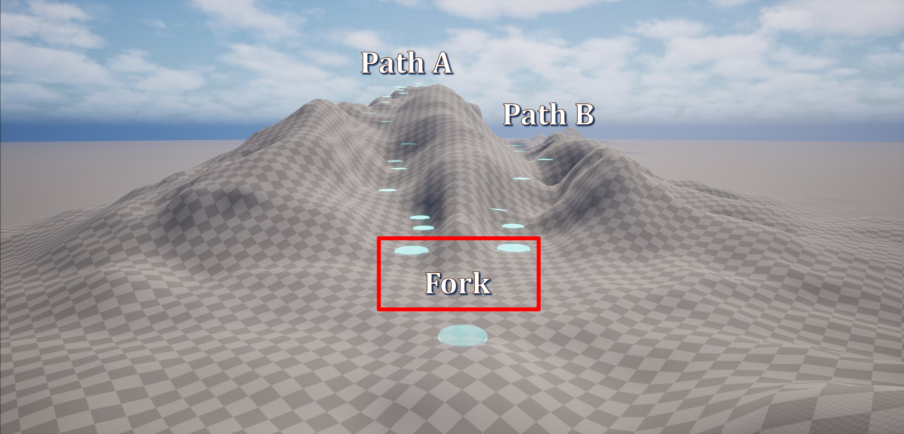

Rhythm GameIn Development
Sonara
A rhythm game where the player moves through the music instead of waiting for it to come to them.
Sonara is a rhythm game where the player guides a bouncing ball along branching paths by steering left and right to land on circles synchronized to the music. Forward movement is automatic, allowing the player to focus on timing, steering, and choosing routes through the environment.
Most rhythm games keep the player in one place while notes or obstacles move toward them. I wanted to explore a different perspective by moving the player through a 3D world while keeping the rhythm gameplay simple and readable. That goal introduced a completely different set of technical challenges.
Before spending time on environment art, I focused on building a timing system I could trust. The current build is intentionally greyboxed because I wanted to solve those underlying systems first.
Unreal Engine 5 · C++ / Blueprint
Where I Started
My first version didn't use Quartz at all. I built a simple gameplay clock that tracked elapsed time and used it to determine when the ball should land on the next circle. It worked well enough for short tests, but over the course of a song the gameplay slowly drifted away from the music. Even tiny timing errors added up until the ball was visibly landing off the beat.
At that point I realized I didn't want gameplay keeping track of musical time itself. I wanted gameplay to follow the same clock driving the music. That led me to rebuild the system around Unreal Engine's Quartz audio clock.
Taking Control of Beat Events
Switching to Quartz immediately solved the drift, but it exposed another limitation. My first Quartz implementation used 1/4 beat subdivision. Every subdivision automatically fired an OnBeat event, and the gameplay simply reacted whenever Quartz advanced to the next beat.
That worked for evenly spaced rhythms, but I quickly realized I was still giving up too much control. Quartz decided when beat events happened. I wanted to decide that.
To fix it, I changed two parts of the system. First, I increased the clock resolution to 1/16 triplet subdivision so timing could be evaluated much more frequently. Then I stopped letting Quartz trigger beat events automatically.
Instead, every circle stores its own timestamp. During gameplay, the current audio time is continuously compared against the timestamp of the next circle. When the song crosses that timestamp, the event fires once, the ball bounces, and the next timestamp becomes active.
That completely changed how levels were authored. Instead of placing circles on fixed beat numbers, I could place them anywhere in the song. Quartz still provides the timing, but I decide exactly when each event happens. That ended up being one of the biggest architectural changes in the project.
Building Songs in Sections
As I started building levels, I realized one long spline wasn't going to scale. Rhythm games naturally repeat musical ideas like verses, choruses, bridges, and drops. If every song had to be built as one continuous spline, making changes meant rebuilding large portions of the level even if I only wanted to replace a single musical phrase.
Instead, I broke the track into independent spline sections. Rather than designing an entire song from start to finish, I could build reusable sections that represented individual musical moments. A verse could be dropped into the level as its own section, while multiple versions of a chorus could be created and swapped in to see which one felt best. Unused sections could be saved and reused later in the same song or on an entirely different level.
That completely changed how I authored levels. Instead of building one long track, I was building reusable musical building blocks that could be assembled into different songs and layouts.

Building Branching Paths
Once I had modular spline sections, branching paths became a natural extension of the system. Using fork sections, the player can choose between two different routes while staying synchronized to the same song. Each branch contains its own spline section, rhythm pattern, and circles before eventually reconnecting to a shared path.
The branching itself worked well, but reconnecting the paths exposed an unexpected problem. Both branches referenced the same next spline section, but the camera always followed whichever incoming branch had been assigned ahead of time. If the player chose the other route, the camera still behaved as though they had taken the original path.
Camera following the wrong path on reconnect
The fix turned out to be much simpler than I expected. Right before entering the shared spline section, I update it with whichever branch the player actually came from. That gives the shared section the correct context before the transition happens, allowing both the camera and gameplay to continue smoothly regardless of which route the player chooses.
Beat-Synchronized Environment
I knew I didn't want to hand-animate every environmental object. Instead, I built a reusable Blueprint actor that synchronizes any prop to the same beat system driving the gameplay. Each instance can define its own bounce height, rotation range, and timing offset while sharing a global intensity value that controls the overall energy of the scene.
The current prototype demonstrates the system using simple greybox rocks, but the goal was always to build a reusable framework that environment art could plug into later instead of creating one-off animations.
Debugging Along the Way
Beat events firing twice
One of the more frustrating bugs caused beat events to fire twice for a single beat. This was a harder bug to find because it didn't have any effect on actual gameplay, it was only noticeable when hooking up scoring and beat-synchronized props.
At first I suspected Quartz, then my C++ code, and finally Blueprint. None of those turned out to be the actual problem. The real issue was that I was preparing the next timestamp before the current event had completely finished executing. Combined with a small timing tolerance window, that briefly allowed the same beat to satisfy the firing conditions twice. Removing that tolerance fixed the issue completely.
Ball landing behind circles
Another issue caused the ball to land behind circles even though the timing was correct. I spent a while looking at timestamps and audio synchronization before realizing the problem wasn't the rhythm system at all, it was the spline geometry. Long spline segments without intermediate control points distorted distance calculations, causing placement errors. Adding additional spline points immediately corrected the problem.
A Design Decision I Reversed
At one point I experimented with making the ball bounce relative to the banking angle of the path. On paper it sounded like a more physically believable solution. In practice, heavily banked paths caused the ball to launch in directions that felt unpredictable and worked against the player's expectations.
I decided to keep the bounce world-relative instead. While it gives up a small amount of visual accuracy, it produces gameplay that feels far more consistent, which is ultimately more important in a rhythm game.
What I Learned
The biggest lesson from Sonara wasn't learning Quartz or spline systems. It was learning that every solution changes the problem you're trying to solve.
Building my own clock taught me why synchronization matters. Quartz solved that problem but revealed that I still wasn't in control of when gameplay events happened. Solving that led to timestamp-based authoring, which then made modular spline sections, branching paths, and reusable beat-driven gameplay much easier to build.
Looking back, each version of the project wasn't a replacement for the last one. It was another step toward giving the designer more control over how the music and gameplay work together.